岡山出身の有名人
岡山県出身の有名人を紹介します。
岡山県のホームページ
千鳥
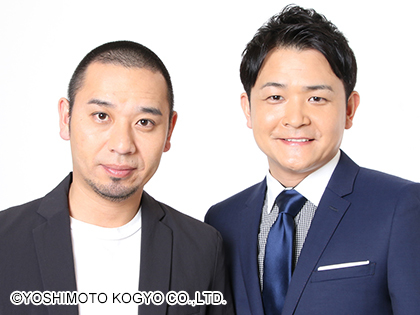
左 大悟 右 ノブ
2000年7月結成
主な賞レースでの成績
- 第1回大会 ２回戦進出
- 第2回大会 準決勝進出
- 第3回大会 決勝9位
- 第4回大会 決勝9位
- 第5回大会 決勝6位
- 第6回大会 準決勝進出
- 第7回大会 決勝8位
- 第8回大会 準決勝進出
- 第9回大会 準決勝進出
- 第10回大会 準決勝進出
ウエストランド
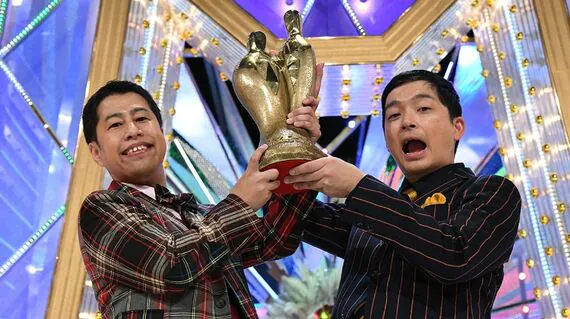
左 井口浩之 右 河本太
2008年11月結成
主な賞レースでの成績
- 第10回大会 2回戦進出
- 第11回大会 3回戦進出
- 第12回大会 準々決勝進出
- 第13回大会 準々決勝進出
- 第14回大会 準決勝進出
- 第15回大会 準々決勝進出
- 第16回大会 決勝9位
- 第17回大会 準々決勝進出
- 第18回大会 優勝
- 第4回大会 1回戦出場
- 第5回大会 準決勝進出
- 第9回大会 2回戦進出
ハナコ 秋山寛貴
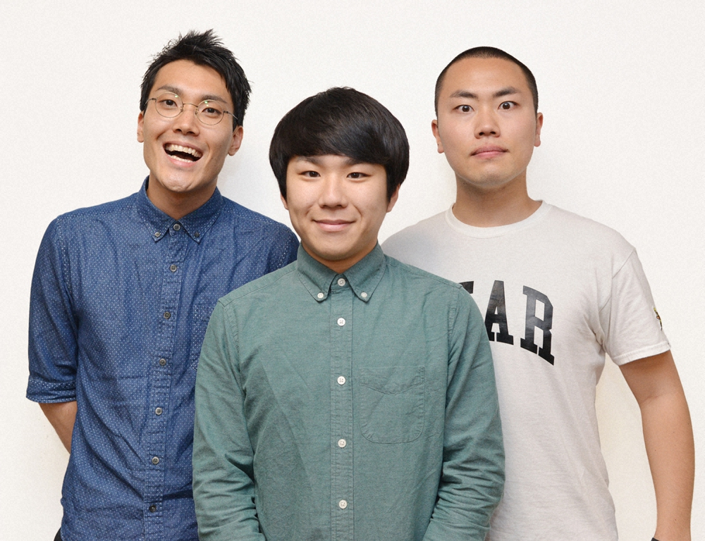
写真真ん中
2014年結成
主な賞レースでの成績
空気階段 水川かたまり
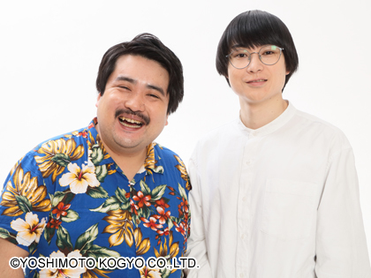
写真右
2012年結成
主な賞レースでの成績
- 第5回大会 1回戦出場
- 第6回大会 2回戦進出
- 第7回大会 2回戦進出
- 第8回大会 準決勝進出
- 第9回大会 2回戦進出
- 第10回大会 準々決勝進出
- 第11回大会 準決勝進出
- 第12回大会 決勝9位
- 第13回大会 決勝3位
- 第14回大会 優勝
かが屋 加賀翔
写真左
2015年結成
主な賞レースでの成績
- 第7回大会 1回戦出場
- 第8回大会 1回戦出場
- 第9回大会 1回戦出場
- 第10回大会 2回戦進出
- 第11回大会 準決勝進出
- 第12回大会 決勝6位
- 第14回大会 準決勝進出
- 第15回大会 決勝5位
見取り図 リリー
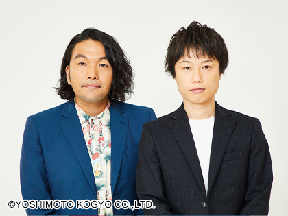
写真右
2007年5月結成
主な賞レースでの成績
第6回大会 1回戦出場
第7回大会 1回戦出場
第8回大会 1回戦出場
第9回大会 準決勝進出
第10回大会 3回戦進出
第15回大会 準々決勝進出
第16回大会 準々決勝進出
第17回大会 準決勝進出
第18回大会 決勝9位
第19回大会 決勝5位
第20回大会 決勝3位
第21回大会 準決勝進出
第22回大会 準々決勝進出
稲葉浩志（B'z）
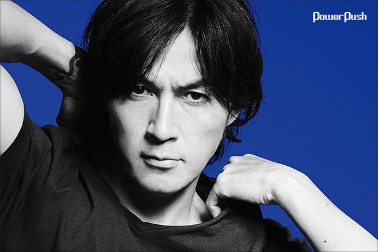
活動期間 1985年～ Official Website
藤井風
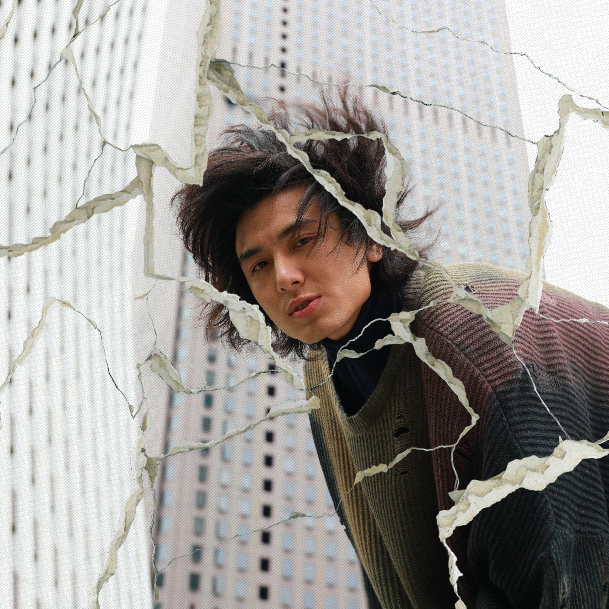
活動期間 2008～ Official Website
豆原一成（JO1）
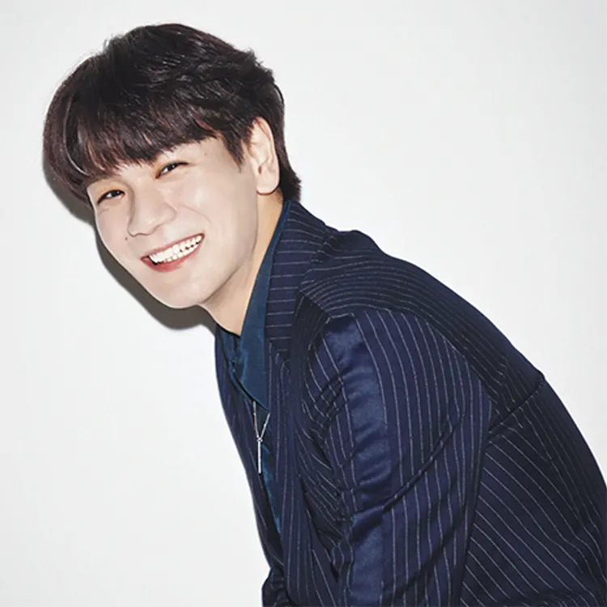
活動期間 2020～ JO1のメンバー
山本由伸
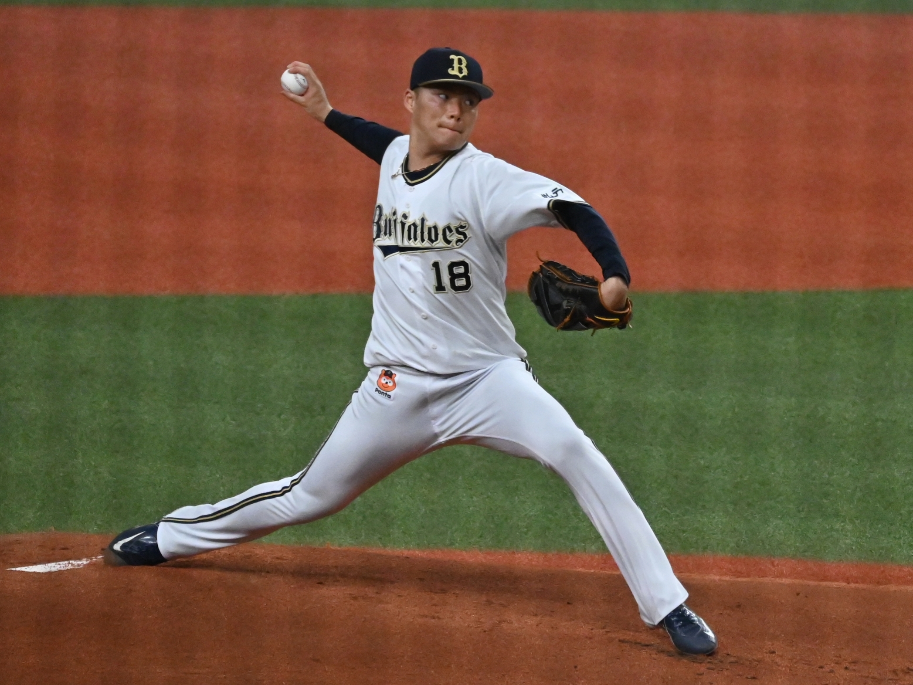
Wikipedia
石井優希
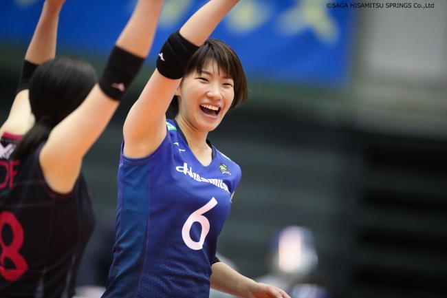
Wikipedia
桜井日奈子
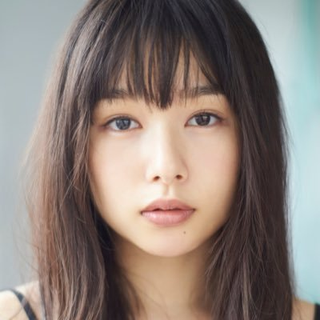
公式ブログ Wikipedia
鈴鹿央士
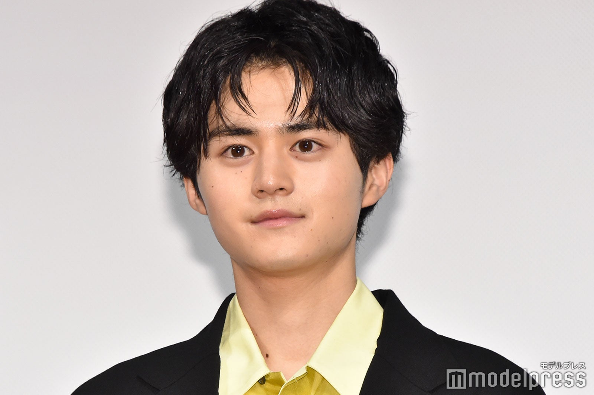
Official Website Wikipedia
©2023 Shunya Kato